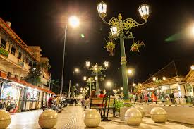
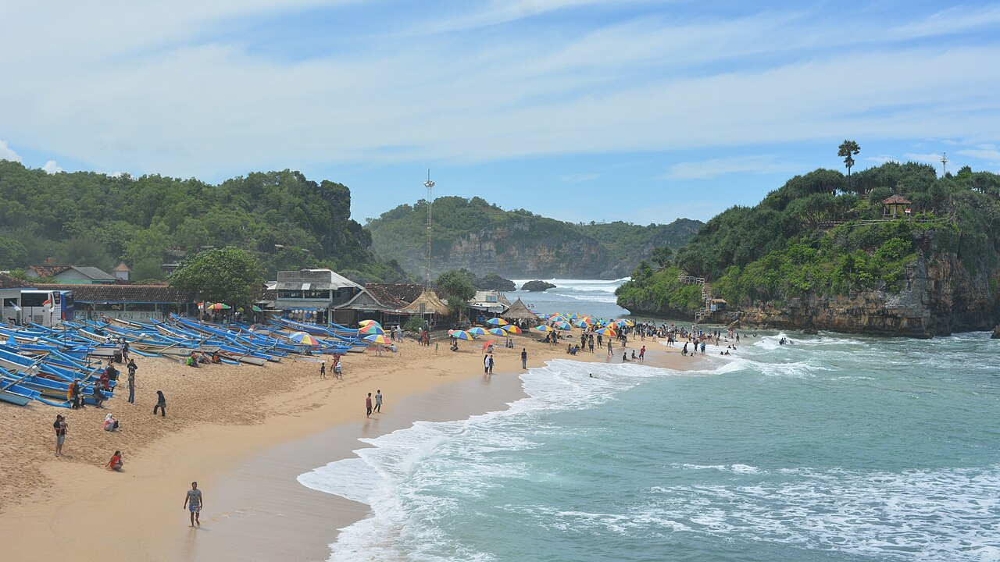

Popular Destination
Featured Locations

Malioboro
Ikon wisata dan pusat keramaian kota.
Prambanan
Candi Hindu terbesar di Indonesia.

Gunung Kidul
Wisata alam dan pantai eksotis.

Keraton
Pusat budaya dan sejarah Yogyakarta.